제주, 맞춤
추천일정
입니다.
유네스코 자연유산부터 카페·바닷길까지, 동·서·남 코스로 즐겨보세요.
Day 1
Day 2
Day 3
1
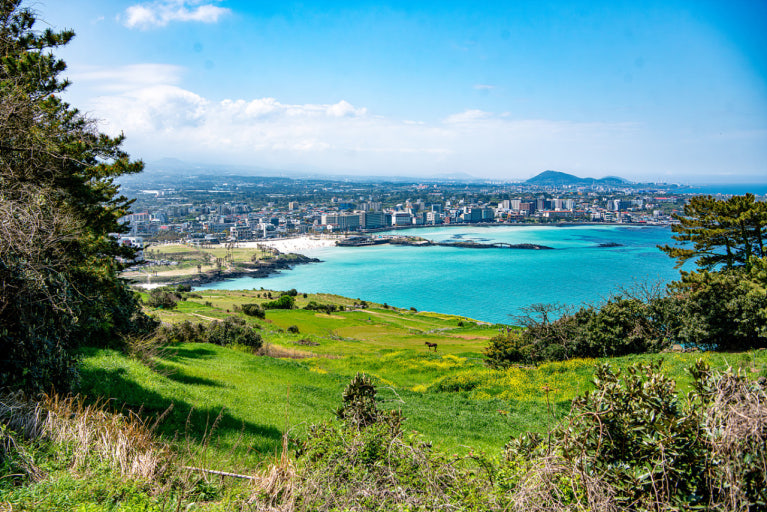
함덕서우봉해변
beach ·
제주특별자치도 제주시 조천읍 함덕리 일대
에메랄드 빛 얕은 바다와 산책데크. 오전 바다 감상+브런치.
2
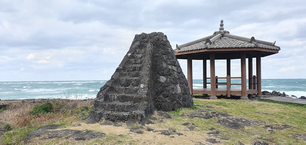
북촌리 등명대
food ·
제주특별자치도 제주시 조천읍 북촌리 1363-1
옛날의 등대의 모습을 온전히 간직한 유물.
3
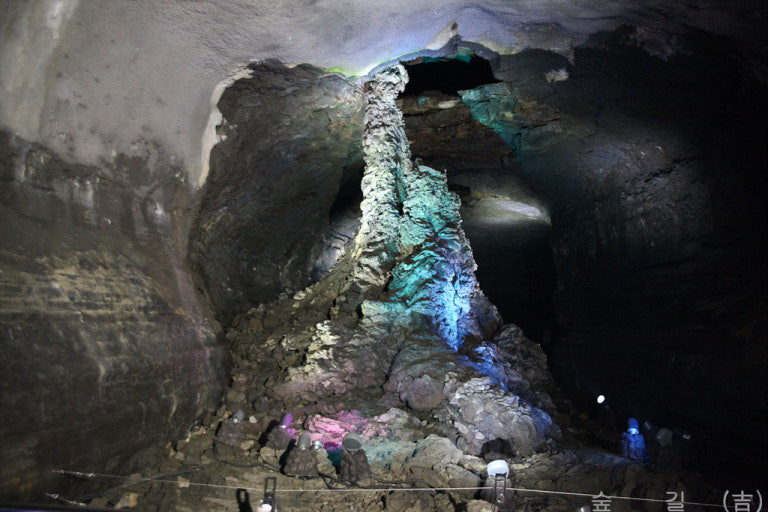
만장굴
UNESCO ·
제주특별자치도 제주시 구좌읍 만장굴길 182
세계적 용암동굴. 내부 온도 낮으니 겉옷 챙기기.
4
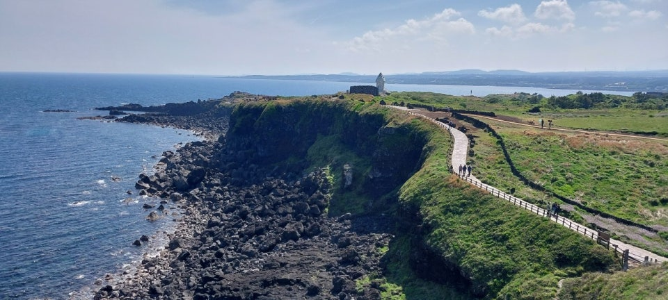
섭지코지
coast walk ·
제주특별자치도 서귀포시 성산읍 고성리 226-1
드라마 촬영지로 유명한 해안 산책로와 등대, 포토스팟.
5
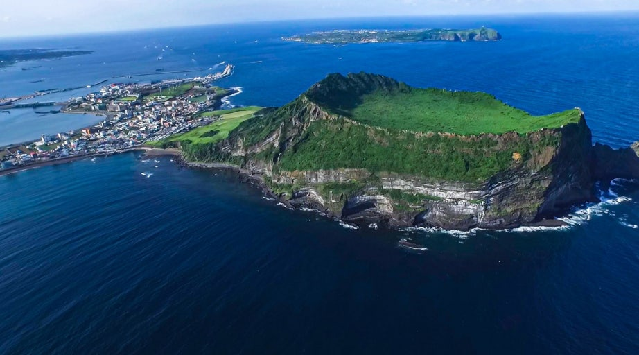
성산일출봉
UNESCO ·
제주특별자치도 서귀포시 성산읍 성산리 1
분화구 정상 트레킹. 일출/석양 뷰 포인트로 최강.
1
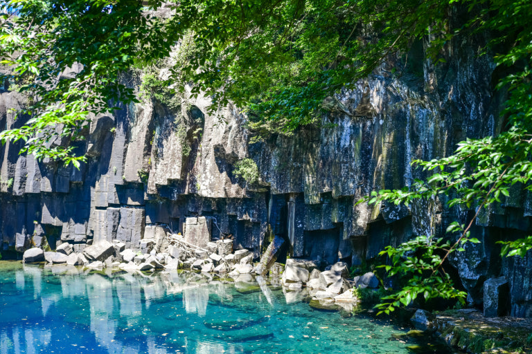
천제연폭포
nature ·
제주특별자치도 서귀포시 천제연로 132
제1·2·3폭포 순환 산책. 선녀다리 뷰 포인트.
2
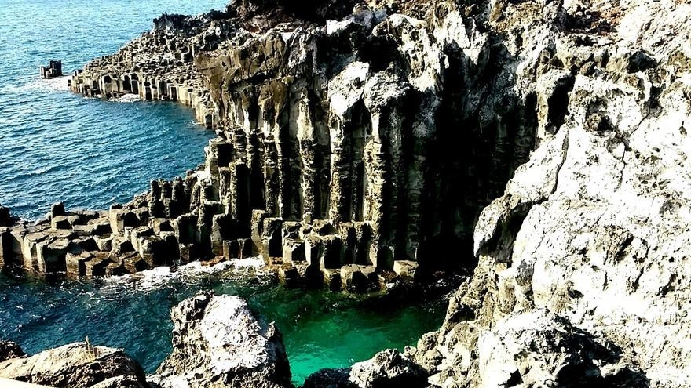
대포주상절리대
geosite ·
제주특별자치도 서귀포시 이어도로 36-24
육각기둥 현무암 절벽 감상. 파도치는 날이 더 장관.
3
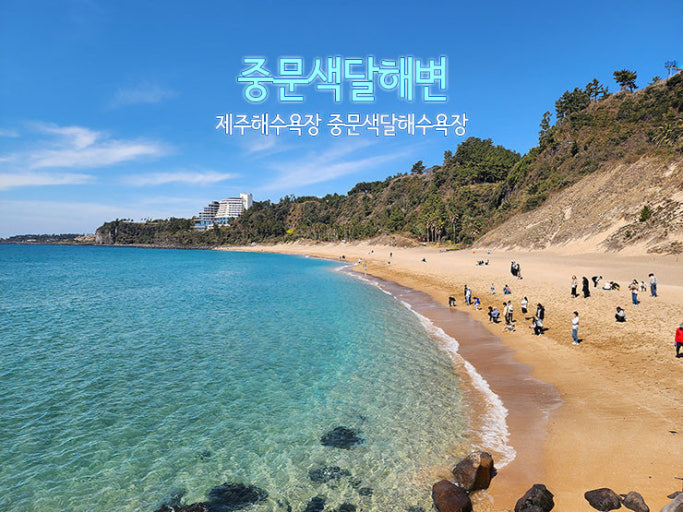
중문색달해변
beach ·
제주특별자치도 서귀포시 색달로 303-3
부드러운 모래와 파도. 파라솔/보드 대여 가능.
4
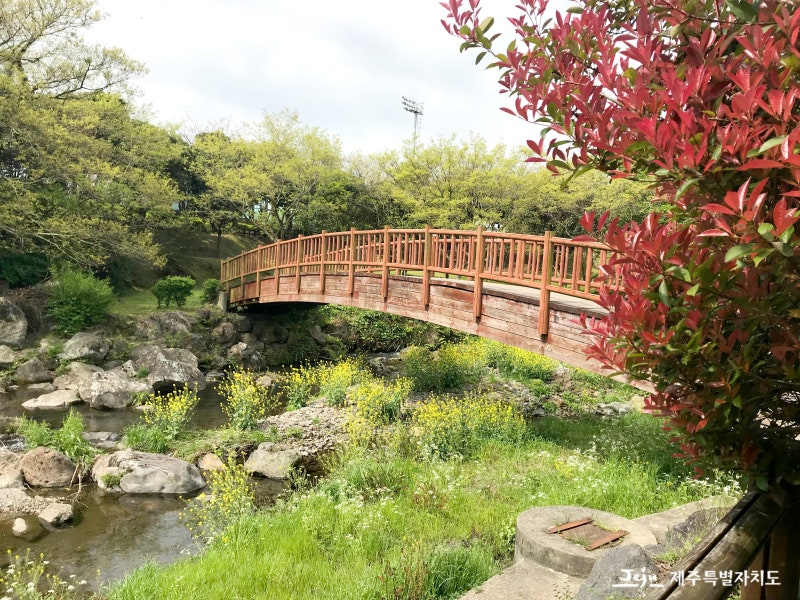
걸매생태공원
night view ·
제주특별자치도 서귀포시 서홍로 4-42
많은 자연환경과 다채로운 식물,동물들을 한눈에 볼 수 있는 공원.
5
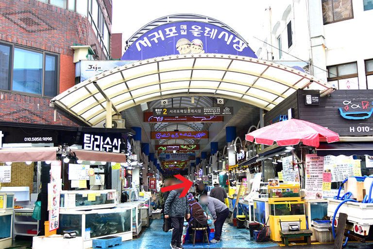
서귀포 매일올레시장
food market ·
제주특별자치도 서귀포시 중앙로62번길 18
귤주스·고기국수·튀김만두 등 길거리 먹거리 투어.
1
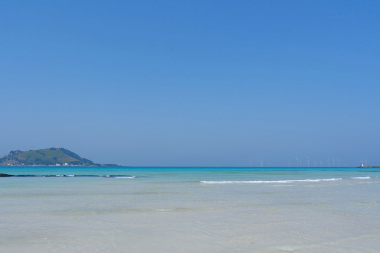
협재해수욕장
beach ·
제주특별자치도 제주시 한림읍 협재리 2497-1
비양도 뷰와 에메랄드 바다. 오전 물색 최고.
2
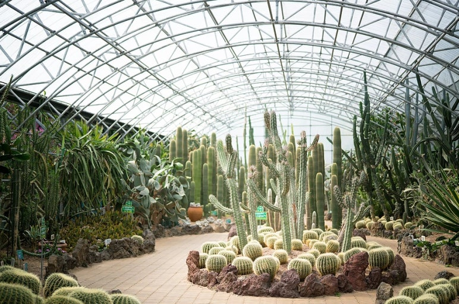
한림공원
garden ·
제주특별자치도 제주시 한림읍 한림로 300
야자수길·협재석굴·쌍용굴. 남녀노소 산책 코스.
3
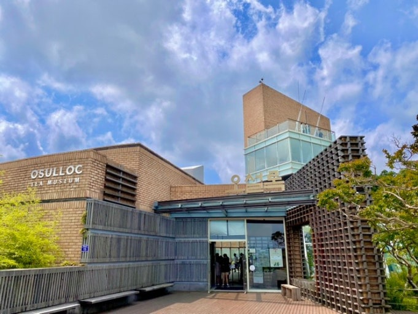
수원환해장성
cafe ·
제주특별자치도 제주시 한림읍 수원리 1014
탐라의 만리장성으로 불리는 곳.
4
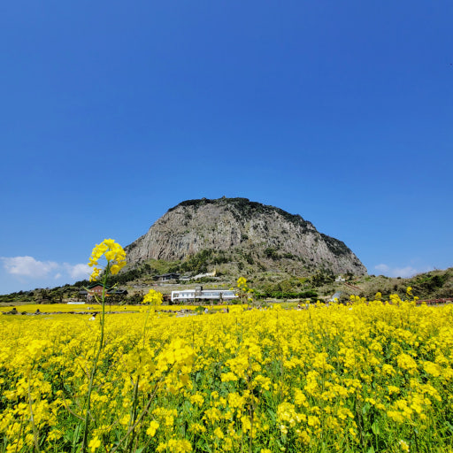
금성포구
geosite ·
제주특별자치도 제주시 애월읍 금성리 573-1
해식절벽 트레킹. 밀물시간 체크 필수(입장 통제 있음).
5
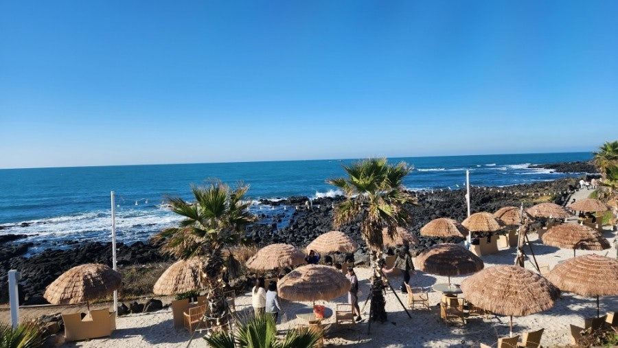
애월 카페거리
cafe street ·
제주특별자치도 제주시 애월읍 애월로 일대
오션뷰 카페로 마무리. 노을 타이밍에 맞춰 방문.
내 일정으로 담기